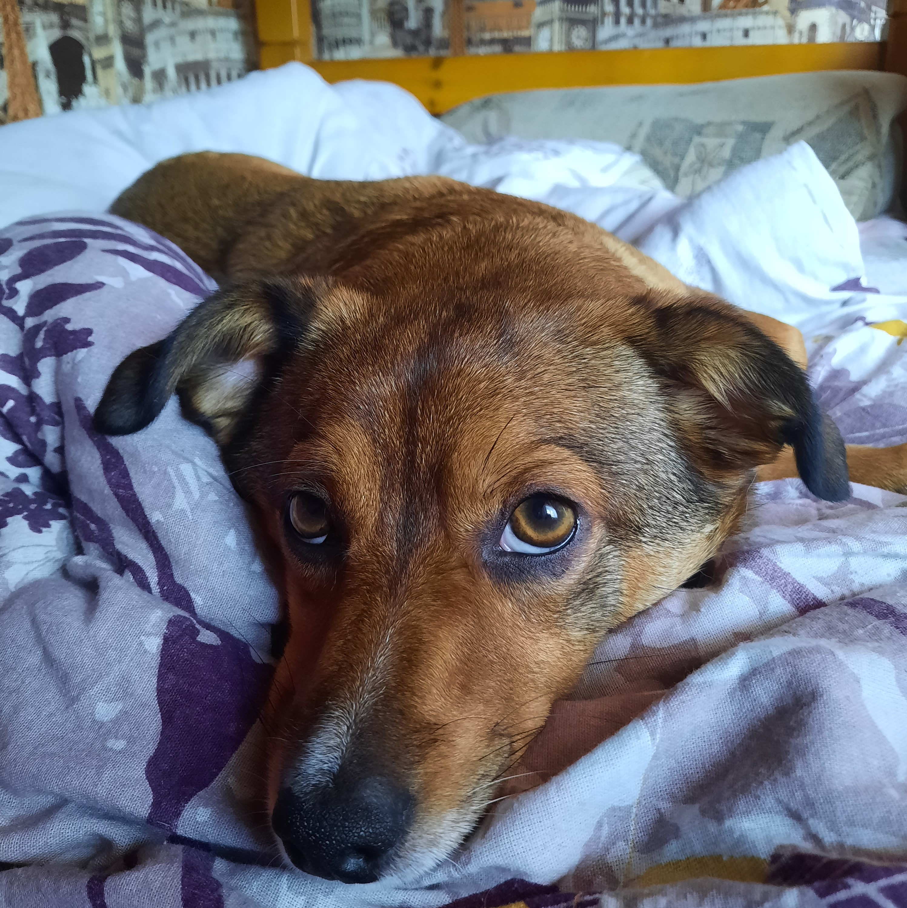

Джесси
Всем привет! Меня зовут Саша, Александра или просто Саня, если ты мой друг, а я надеюсь, ты им станешь! И это моя 3ья лабораторная работа! И ее тема - Моё домашнее живнотное))) Ну что ж, пора начинать. Знаете, в мире столько домашних животных, что я порой не понимаю, как можно выбрать кого-то одного. Именно поэтому у нас (а точнее, у моего брата) были и попугай, и черепаха, и улитки.Кстати, если хотите увидеть, как рожают улитки, могу показать видео))Но у меня нет их фоток, поэтому посмотрите на корову!
Ладно,это все шуточки. А если серьезно, то у меня есть любимая собака Джесси. Смотри какая милаха!
Сейчас я немного о ней расскажу!Джесси появилась в нашей семье в далеком 2019 еще маленькой крохой. Сейчас ей уже 3 года, а я до сих пор помню эту сладкую булочку!
чтобы Вы узнали ее поближе я составила подробные списки того, что она любит и того, что она не любит. А еще списочек с ее именами!
Что любит Джесси?
- Есть
- Спать
- Беситься с моим папой
Что Джесси не любит?
- Когда ее не угощают вкусняшками
- Холод
- Чужих детей
Как мы называем Джесси?
- Джесси
- Булочка
- Джулик
